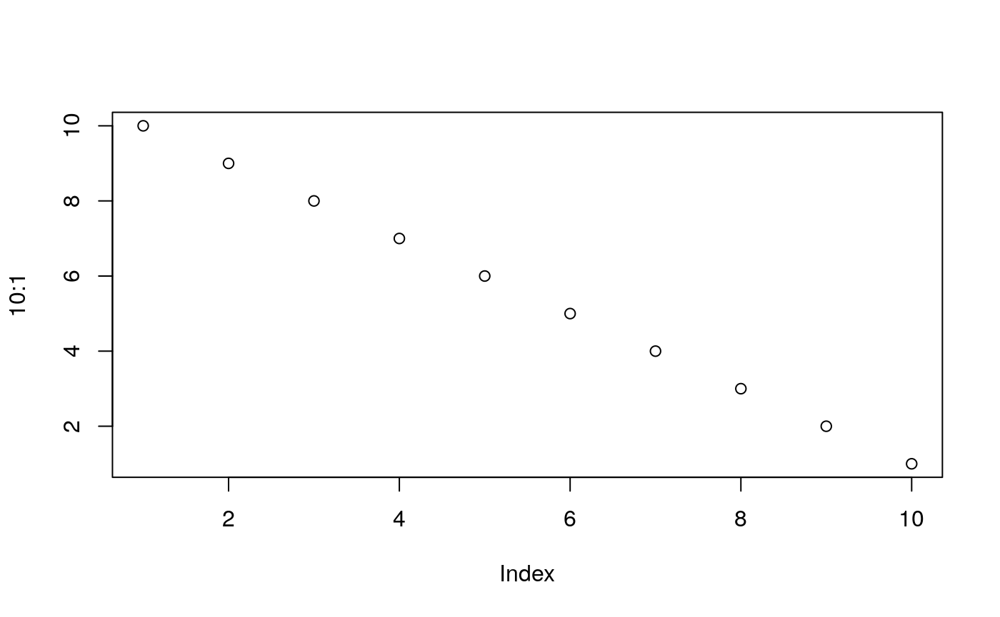
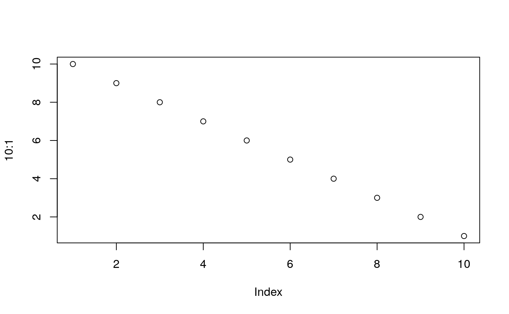

Example script
Lara Basson
2018-06-27
example-script.RmdHere is an example script you can run to get a feel for how you might set up CSVs for a report.
Set up your account code & filter
# First you'll want to set an account code
code <- "QUIR01BA"
# Then set a filter - remember to add a brand
filter <- "published inthelast week and relevancy is relevant and brand isorchildof 10006"If you want to find brand IDs from an account, look at our article on finding brands using R!
Getting volume and sentiment breakdown (volume )
library(chartingtest)
# Now you can get a breakdown of volume and sentiment (including net sentiment) by date
volume_sentiment_metric(code, filter)
#> # A tibble: 8 x 9
#> published count netSentiment positiveSentiment positivePercent
#> <dttm> <int> <int> <int> <dbl>
#> 1 2018-06-20 00:00:00 1 0 0 0
#> 2 2018-06-21 00:00:00 1 0 0 0
#> 3 2018-06-22 00:00:00 8 5 5 0.625
#> 4 2018-06-23 00:00:00 2 -2 0 0
#> 5 2018-06-24 00:00:00 1 0 0 0
#> 6 2018-06-25 00:00:00 17 10 11 0.647
#> 7 2018-06-26 00:00:00 22 9 9 0.409
#> 8 2018-06-27 00:00:00 8 4 4 0.5
#> # ... with 4 more variables: negativeSentiment <int>,
#> # negativePercent <dbl>, neutralSentiment <int>, neutralPercent <dbl>
# You can tell the function what to group by
volume_sentiment_metric(code, filter, group = "week")
#> # A tibble: 2 x 9
#> published count netSentiment positiveSentiment positivePercent
#> <dttm> <int> <int> <int> <dbl>
#> 1 2018-06-18 00:00:00 13 3 5 0.385
#> 2 2018-06-25 00:00:00 47 23 24 0.511
#> # ... with 4 more variables: negativeSentiment <int>,
#> # negativePercent <dbl>, neutralSentiment <int>, neutralPercent <dbl>Figures
The figure sizes have been customised so that you can easily put two images side-by-side.
 

You can enable figure captions by fig_caption: yes in YAML:
output:
rmarkdown::html_vignette:
fig_caption: yesThen you can use the chunk option fig.cap = "Your figure caption." in knitr.
More Examples
You can write math expressions, e.g. \(Y = X\beta + \epsilon\), footnotes1, and tables, e.g. using knitr::kable().
| mpg | cyl | disp | hp | drat | wt | qsec | vs | am | gear | carb | |
|---|---|---|---|---|---|---|---|---|---|---|---|
| Mazda RX4 | 21.0 | 6 | 160.0 | 110 | 3.90 | 2.620 | 16.46 | 0 | 1 | 4 | 4 |
| Mazda RX4 Wag | 21.0 | 6 | 160.0 | 110 | 3.90 | 2.875 | 17.02 | 0 | 1 | 4 | 4 |
| Datsun 710 | 22.8 | 4 | 108.0 | 93 | 3.85 | 2.320 | 18.61 | 1 | 1 | 4 | 1 |
| Hornet 4 Drive | 21.4 | 6 | 258.0 | 110 | 3.08 | 3.215 | 19.44 | 1 | 0 | 3 | 1 |
| Hornet Sportabout | 18.7 | 8 | 360.0 | 175 | 3.15 | 3.440 | 17.02 | 0 | 0 | 3 | 2 |
| Valiant | 18.1 | 6 | 225.0 | 105 | 2.76 | 3.460 | 20.22 | 1 | 0 | 3 | 1 |
| Duster 360 | 14.3 | 8 | 360.0 | 245 | 3.21 | 3.570 | 15.84 | 0 | 0 | 3 | 4 |
| Merc 240D | 24.4 | 4 | 146.7 | 62 | 3.69 | 3.190 | 20.00 | 1 | 0 | 4 | 2 |
| Merc 230 | 22.8 | 4 | 140.8 | 95 | 3.92 | 3.150 | 22.90 | 1 | 0 | 4 | 2 |
| Merc 280 | 19.2 | 6 | 167.6 | 123 | 3.92 | 3.440 | 18.30 | 1 | 0 | 4 | 4 |
Also a quote using >:
“He who gives up [code] safety for [code] speed deserves neither.” (via)
A footnote here.↩